龙门石窟
简介:
龙门石窟是中国石刻艺术宝库之一，现为世界文化遗产、全国重点文物保护单位、国家AAAAA级旅游景区，位于河南省洛阳市洛龙区伊河两岸的龙门山与香山上。
龙门石窟开凿于北魏孝文帝年间，之后历经东魏、西魏、北齐、隋、唐、五代、宋等朝代连续大规模营造达400余年之久，南北长达1公里，今存有窟龛2345个，造像10万余尊，碑刻题记2800余品。其中“龙门二十品”是书法魏碑精华，褚遂良所书的“伊阙佛龛之碑”则是初唐楷书艺术的典范。
龙门石窟开凿于北魏孝文帝年间，之后历经东魏、西魏、北齐、隋、唐、五代、宋等朝代连续大规模营造达400余年之久，南北长达1公里，今存有窟龛2345个，造像10万余尊，碑刻题记2800余品。其中“龙门二十品”是书法魏碑精华，褚遂良所书的“伊阙佛龛之碑”则是初唐楷书艺术的典范。
主要景观:
龙门石窟始开凿于北魏孝文帝迁都洛阳（公元493年）前后，后来，历经东西魏、北齐、北周，到隋唐至宋等朝代又连续大规模营造达400余年之久。密布于伊水东西两山的峭壁上，南北长达1公里，共有97000余尊佛像，最大的佛像高达17.14米，最小的仅有2厘米。
西山崖壁上有北朝和隋唐时期的大、中型洞窟50多个。古阳洞、宾阳中洞、莲花洞、皇甫公窟、魏字洞、普泰洞、火烧洞、慈香窑、路洞等，为北魏时期的代表洞窟；潜溪寺、宾阳南洞、宾阳北洞（以上两洞的洞窟及窟顶装饰完成于北魏，佛像完成于隋和初唐）、敬善寺、摩崖三佛龛、万佛洞、惠简洞、奉先寺、净土堂、龙花寺、极南洞等为唐代代表洞窟。东山全是唐代的窟龛，其中大、中型洞窟有20个，如二莲花洞、看经寺洞、大万伍佛洞（又名擂鼓台三洞）、高平郡王洞等。
No.1 奉先寺
奉先寺是龙门石窟规模最大、艺术最为精湛的一组摩崖型群雕，因为它隶属于当时的皇家寺院奉先寺而俗 称“奉先寺”。此窟建开凿于唐高宗初，咸享三年（公元672年）皇后武则天赞助脂粉钱两万贯，上元二年（公元675年）功毕，长宽各30余米,洞中佛像明显体现了唐代佛像艺术特点，面形丰肥、两耳下垂，形态圆满、安详、温存、亲切，极为动人。主佛莲座北侧的题记称之为“大卢舍那像龛”，这里共有九躯大像，中间主佛为卢舍那大佛，为释迦牟尼的报身佛，据佛经说，卢舍那意即光明遍照。这座佛像通高17.14米，头高4米，耳朵长达1.9米，佛像面部丰满圆润，头顶为波状形的发纹，双眉弯如新月，附着一双秀目，微微凝视着下方。高直的鼻梁，小小的嘴巴，露出祥和的笑意。双耳长且略向下垂，下颏圆而略向前突。圆融和谐，安详自在，身着通肩式袈裟，衣纹简朴无华，一圈圈同心圆式的衣纹，把头像烘托的异常鲜明而圣洁。整尊佛像，宛若一位睿智而慈祥的中年妇女，令人敬而不惧。有人评论说，在塑造这尊佛像时，把高尚的情操、丰富的感情、开阔的胸怀和典雅的外貌完美地结合在一起，因此，她具有巨大的艺术魅力。
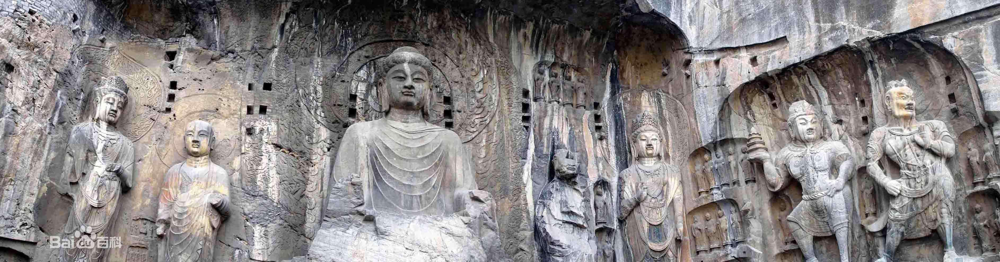奉先寺全图
No.2 潜溪寺
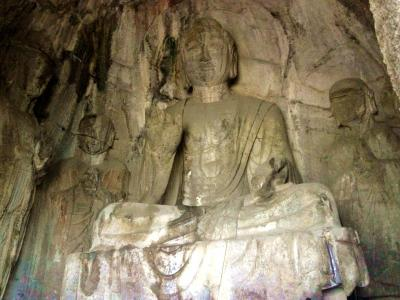 潜溪寺
潜溪寺是龙门西山北端第一个大窟。它高、宽各九米多，进深近七米，大约建于一千三百多年前的唐代初期。窟顶藻井为一朵浅刻大莲花。主佛阿弥陀佛端坐在须弥台上，面颐丰满，胸部隆起，衣纹斜垂座前，身体各部比例匀称，神情睿智，整个姿态给人以静穆慈祥之感。主佛左侧为大弟子迦叶，右侧为小弟子阿难。两弟子旁边分别为观世音菩萨与大势至菩萨。特别是南壁的大势至菩萨，造型丰满敦厚，仪态文静，在故宫博物院有1比1的复制品陈列。阿弥陀佛与两侧的两位菩萨共称为西方三圣，即掌管西方极乐世界的三位圣人，是佛教净土宗信仰的对象
No.3 宾阳洞
宾阳洞分为宾阳中洞和宾阳南洞，宾阳中洞是北魏时期代表性的洞窟。“宾阳”意为迎接出生的太阳。宾阳三洞开凿于北魏时期，是北魏的宣武帝为他父亲孝文帝做功德而建。它开工于公元500年，历时24年，用工达80万2366个，后因为发生宫廷政变以及主持人刘腾病故等原因，计划中的三所洞窟（宾阳中洞、南洞、北洞）仅完成了一所即宾阳中洞，南洞和北洞都是到初唐才完成了主要造像。
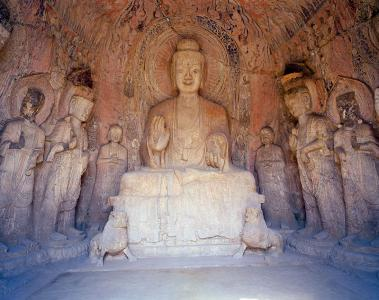 宾阳中洞
宾阳南洞的洞窟为北魏时期开凿，但洞中几尊主要的佛像都是在初唐完成的。洞中主佛为阿弥陀佛，面相饱满，双肩宽厚，体态丰腴，体现了唐朝以胖为美的风格。宾阳南洞是唐太宗李世民的第四子魏王李泰在北魏废弃的基础上又续凿而成，为其生母长孙皇后做功德而建，属于过渡时期的作品。
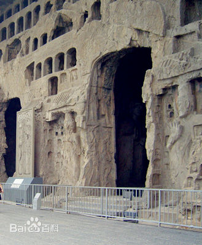 宾阳南洞
No.4 万佛洞
万佛洞因洞内南北两侧雕有整齐排列的一万五千尊小佛而得名。洞窟呈前后室结构，前室造二力士、二狮子，后室造一佛二弟子二菩萨二天王，是龙门石窟造像组合最完整的洞窟。在洞内南北两壁整齐地刻有一万五千尊小佛像，每尊只有四厘米高。在南北两壁的壁基上各刻有六位伎乐人，舞伎在悠扬的乐曲声中翩翩起舞，体态轻盈，婀娜多姿。
洞口南侧还有一尊菩萨像，她是龙门石窟唐代众多菩萨像的精美范例。菩萨通高85厘米，头部向右倾斜，身体成“s”形的曲线，整个姿态显得非常优美端庄。中国著名戏剧大师梅兰芳早年参观龙门时，被她那优美的形象所吸引并大加赞赏，此后经过艺术加工，成功地运用到他的表演中。
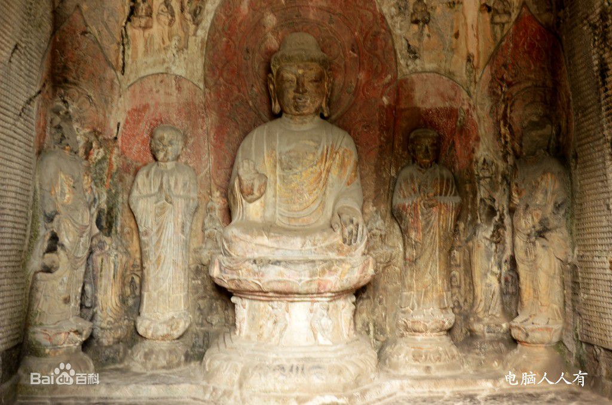奉先寺全图
No.5 莲花洞
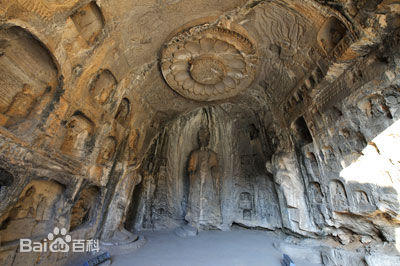 莲花洞
莲花洞因窟顶雕有一朵高浮雕的大莲花而得名，大约开凿于北魏年间。莲花是佛教象征的名物，意为出污泥而不染。因此，佛教石窟窟顶多以莲花作为装饰，但像莲花洞窟顶这样硕大精美的高浮雕大莲花，在龙门石窟也不多见。莲花周围的飞天体态轻盈，细腰长裙，姿态自如。人民大会堂的莲花顶就是依据此莲花设计而成。
No.6 古阳洞
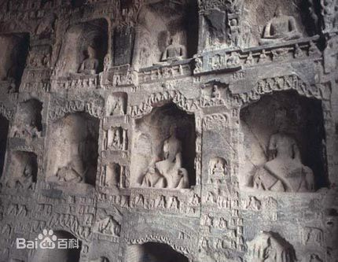 古阳洞
古阳洞在龙门山的南段，开凿于公元493年，是龙门石窟造像群中开凿最早、佛教内容最丰富、书法艺术最高的一个洞窟。它规模宏伟、气势壮观。洞中北壁刻有楷体“古阳洞”三个字。清末光绪年间，道教在龙门地区兴起。道士见古阳洞无主，不忍荒废，于是将释迦牟尼像改成太上老君道德天尊神像。因为据传老君曾在此修道练丹，故而古阳洞又叫老君洞。
No.7 药方洞
药方洞因窟门刻有诸多唐代药方而得名。它始凿于北魏晚期，经东魏、北齐，到唐初还仍有雕刻。洞中五尊佛像，身躯硬直少曲线，脖子短粗，身体硕壮，菩萨头冠两旁的带子很长，下垂到胳膊上部。这都是北齐造像的特征。洞门两侧刻有药方150多种，所用药物多是植物、动物和矿物药。药方涉及内科、外科、小儿科、五官科等，所涉及药材在民间都能找到，很大程度上方便了老百姓。药方洞的药方是中国现存最早的石刻药方，对研究中国医药学起重要的作用。
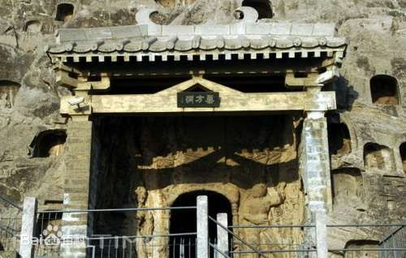 药方洞
No.8 老龙洞
老龙洞是就着自然山洞开凿而成的,其平面呈长马蹄形,顶部近似穹隆顶。该洞因不是由专人出钱开凿的，所以没有造出主要的一铺大佛。全窟密布小龛54处，其中较大的有12、32、33、50号龛，俱有永徽元年的造像题记。老龙洞因为多人开凿，都是以祈福、求功德为主，并无突出主题，所以附带了浓郁的生活气息，为研究初唐的民间造窟风气、特色提供了有力地考证。
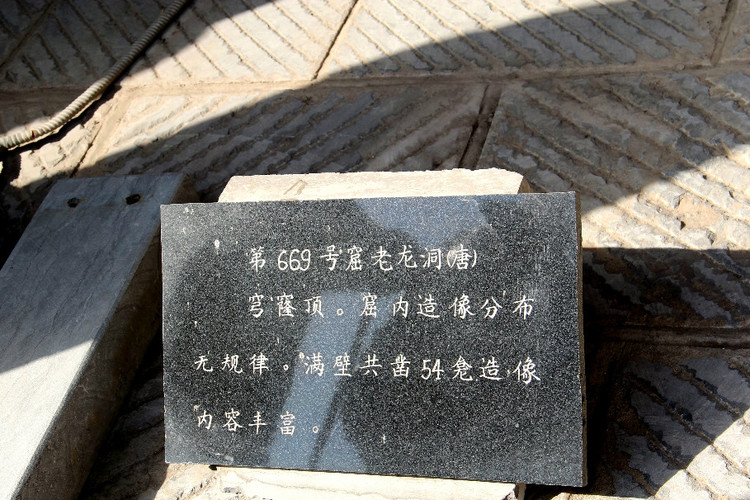 老龙洞
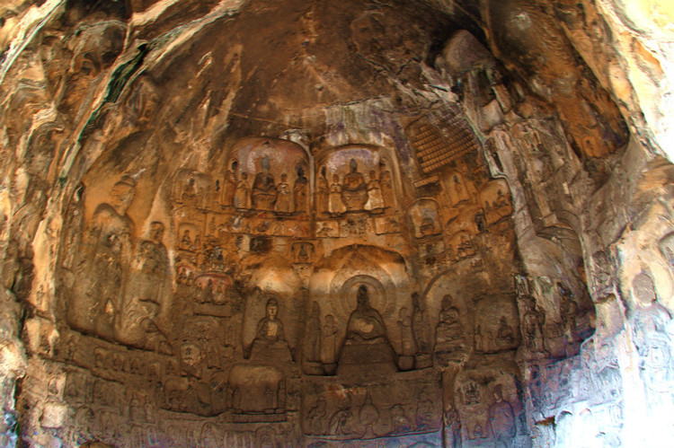 老龙洞
No.9 惠简洞
惠简洞位于万佛洞南侧，是一个敞口中型洞窟，高4.25公尺，深2.70公尺。大唐咸亨四年，11月7日，西京法海寺僧惠简敬造此窟，所以此洞又称“西京法海寺惠简洞”。洞窟前半部应该是原有的窟门，已经塌毁。窟内平面近似马蹄形，西壁呈圆弧形，并在南北两端略向里凹，*西壁下部凿出一半圆形的基坛。西璧正中凿一善跏趺坐的弥勒，坐于一平面呈长方形的高座之上，足下还踏一长方形台。弥勒两侧雕出二弟子、二菩萨，均立于基坛之上，足下踏束腰圆形莲台。左协侍弟子已不存在，右侧的阿难形象与奉先寺的阿难很相似。菩萨头部已经残损，仅剩其火焰状头光部分。主尊弥勒面相胖圆，右手扶右膝，左手放于左膝之上，掌心向上，胸部隆起。头后以浅浮雕的手法刻出圆形头光与背屏，上部隆起呈三角状，两端各向外伸出一龙头。这种背屏大万五佛洞以及部分优填王向看重也有类似的形制。平顶，表面没有装饰。另外，窟内还分布有一些后期补凿的小龛，其时代也应该是在唐代。
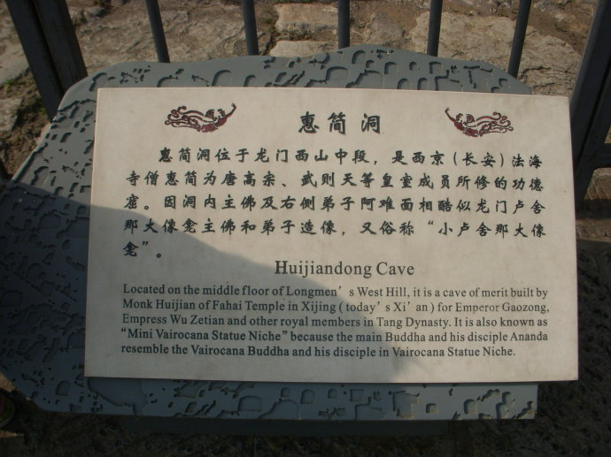 惠简洞
虽然惠简洞造像现在看去较为简单，但主题却十分“鲜明”：主尊弥勒佛，丰满圆润的面相极富女性魅力，而温文沉静的神情，又似君临天下的气度。这显然是借弥勒佛而为武则天“造舆论”的又一石窟。在石窟南壁有一造像题记，表明它开凿的年代正是武则天与唐高宗同御朝政，并称“二圣”的时期——“伏愿皇帝圣花无穷，殿下诸王福沿万代”，惠简在提及皇帝、诸王的同时，以弥勒佛的造像突出了武则天，用意昭然若揭。
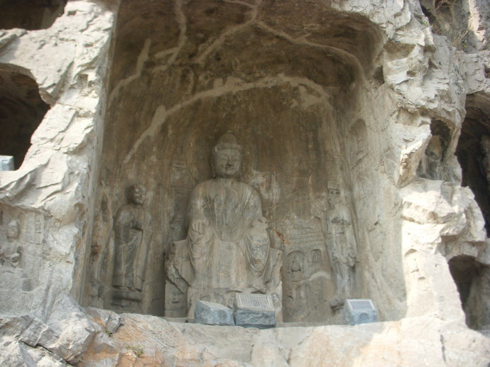 惠简洞
No.10 看经寺
看经寺为武则天时期所雕刻，双室结构，前室崖壁有数十个小龛造像，主室进深1170厘米，宽1116厘米，高825厘米，平顶，方形平面，四壁垂直，三壁下部雕出高均180厘米的传法罗汉二十九祖（正壁11身，两壁个9身），为中国唐代最精美的罗汉群像，是据隋代费长房《历代法宝记》刊刻的。这种不雕佛像仅雕罗汉的大窟，似是一大型禅堂，可能是禅宗所主持开凿的。看经寺是龙门东山最大的一个洞窟，29尊传法罗汉保存完好。

看经寺罗汉
No.11 香山寺
香山寺位于十三朝古都洛阳城南13公里处的香山西坳，与世界文化遗产——龙门石窟西山窟区一衣带水，隔河相望，与龙门石窟东山窟区和白园一脉相连，并肩邻立。[2] 因盛产香葛而得名。
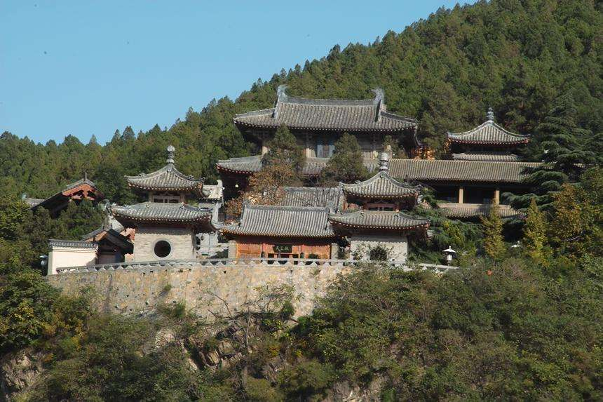香山寺
香山寺微始建于北魏熙平元年（公元516年）。唐垂拱三年（公元687年），印度来华高僧地婆诃罗（日照）葬于此，为安置其遗身重建佛寺。天授元年（公元690年），武则天在洛阳称帝，建立武周王朝，梁王武三思奏请，敕名“香山寺”，并重修该寺，当时香山寺危楼切汉，飞阁凌云，巍巍壮观，武则天常驾亲游幸，御香山寺中石楼坐朝。留下了“香山赋诗夺锦袍”的佳话。唐大和六年（公元832年），河南尹白居易捐资六七十万贯，重修香山寺，并撰《修香山寺记》，寺名大振，这篇文章开篇第一句即是对香山寺的推崇“洛都四郊山水之胜，龙门首焉，龙门十寺，观游之胜，香山首焉”，此外，白居易还搜集了5000多卷佛经藏入寺中。白居易自号“香山居士”与如满和尚等人结成“香山九老会”吟咏于该寺的堂上林下，会昌六年（公元846年）白居易去世，遗命葬于香山寺如满大师塔侧。
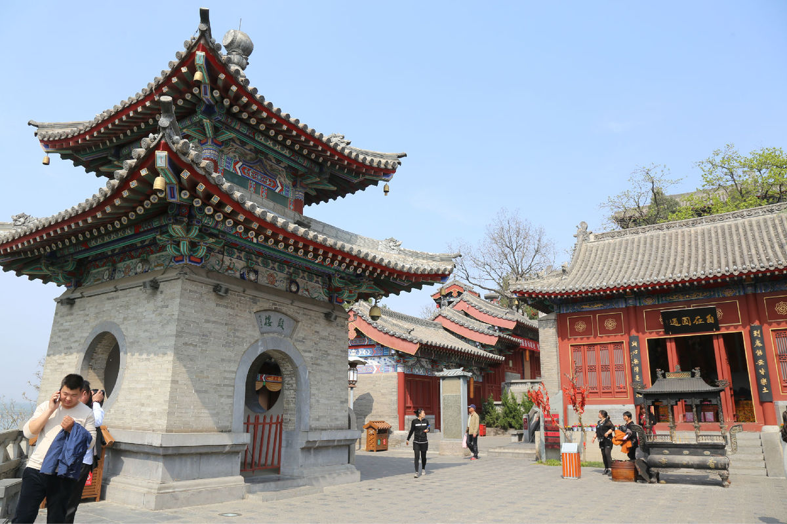 香山寺
宋金时期香山寺犹存，元末废弃，清康熙年间重修，乾隆皇帝曾巡幸香山寺，称颂“龙门凡十寺，第一数香山”，这句诗摘自他当时所作的诗《香山寺二首》，被镌刻在石碑之上，位于香山寺的乾隆御碑亭就矗立着这块石碑，已有两百多年了，清末民国初年，香山寺又渐荒芜了，1936年香山寺进行重新修建后，为蒋介石庆祝五十寿辰而在寺内建一幢两层小楼。蒋介石和宋美龄多次在此避暑，这幢小楼位于香山寺内东南侧，被称为“蒋宋别墅”。解放后，香山寺又进行了多次修葺，改造工程从2002年年底到2003年四月上旬完成，历时100天，创造了中国寺院速度之最。这也是香山寺历史上的第五次修复，新香山寺借鉴唐代风格，对蒋宋楼，乾隆御碑亭，衣钵塔等作为历史文物予以修缮、保留、保护。在原址上新建了钟楼、鼓楼、大雄宝殿，整修了天王殿、罗汉殿、步游道等。
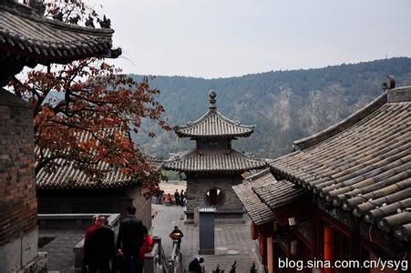 香山寺
No.12 白园
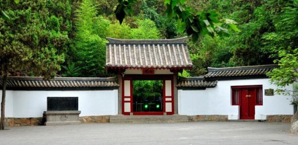 白园
白园，位于洛阳龙门风景名胜区东山琵琶峰上，是唐代诗人白居易的墓园，占地面积3万平方米，1961年被国务院公布为国家重点文物保护单位。
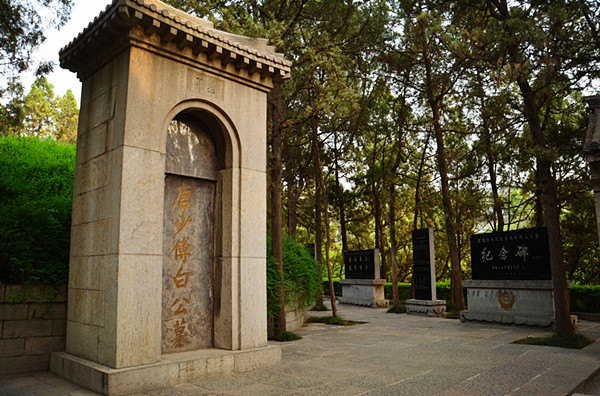 白居易墓
白居易，字乐天，晚年居住洛阳18年。虽尊为“少傅”，但一生清贫，喜酒善诗，在龙门修香山寺，开八节滩，对龙门山水十分眷恋，死后遵嘱葬于此。
白园内主要景点有青谷区、乐天堂、诗廊、墓体区、日本书法廊、道诗书屋等10余处。青谷区位于两山之间，有白池、听伊亭、石板桥、松竹和白莲。进入青谷区瀑布飞泻，池水荡漾，竹林清风，白莲飘香，使人心旷神怡；乐天堂依山傍水，面对青谷，是诗人作诗会友之处，室内自然山石裸露，汉白玉塑像潇洒自然，静座山石之上，给人以深思明世之感。站在乐天堂前，可深切回味诗人原作“门前常流水，墙上多高树，竹径绕荷池，萦回百余步”的内涵；诗廊立石38块，由国内名家书写，行、草、篆、隶齐全，既可以欣赏白居易的名作，又可以领略书法艺术之美。日本书法廊是为中日书法交流而建，多为当代日本书法名家之作，于2000年3月建对外开放。墓体区位于琵琶峰顶，从牡丹坛拾级而上即可到达。这里有白居易墓、卧石碑、乌头门及中外仰慕白居易的客人及族裔的立石。墓前型石铺地，墓后草坪如毯，周围翠柏环抱，给人以庄严肃穆之感。
No.13 蒋宋别墅
1936年，为蒋介石庆祝五十寿辰，地方政府选择香山寺南侧建了一幢两层小楼，被称为蒋宋别墅，当时蒋介石于1936年10月29日从西安乘火车到达洛阳（东站）来到洛阳是以“避寿”为名，实则部署“西北剿共”计划，他于10月31日在别墅庆祝了自己的五十寿辰，参加人员有张学良，阎锡山等，之后他视察了洛阳军校、洛阳电厂，检阅了重炮部队。并和夫人宋美龄三次往复洛阳，去安抚非嫡系部队太原的阎锡山，济南的韩复渠，绥远的傅作义。于12月初离洛到西安，在洛阳共呆了36天，基本都住在香山寺蒋宋别墅
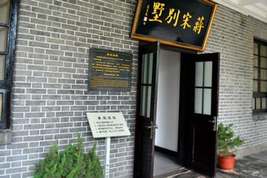 蒋宋别墅
1936年的“豪华别墅”，在三十年后一度成为杨成武将军的“牢狱”。1968年的3月底解放军代总参谋长杨成武将军因受林彪集团迫害，被秘密关押在香山寺。直到1971年1月离开，杨成武将军被羁押于此两年多，没有下过一次楼，监牢之苦在尽尝之中
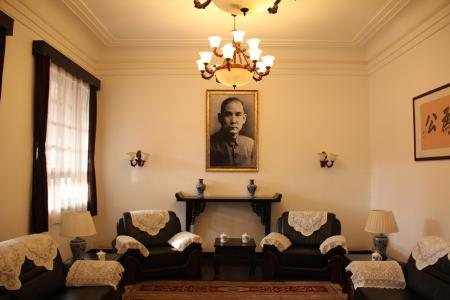 蒋宋别墅
No.14 摩崖三佛龛
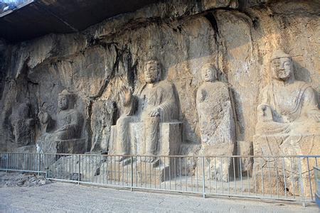 摩崖三佛龛
摩崖三佛龛共有七尊造像，其中三身坐佛，四身立佛，这种造像组合在中国石窟寺中极为罕见。中间主佛为弥勒，坐于方台座上，头顶破坏，仅雕出轮廓，未经打磨。据佛经记载，弥勒佛是“未来佛”，是作为佛释迦牟尼的接班人而出现的。武则天利用弥勒信仰为其登基制造舆论，登基后又自称“慈氏”（即弥勒），推动了弥勒信仰的风行。摩崖三佛龛的开凿正是在这样的历史背景下出现的，随着武周政权的垮台，摩崖三佛龛也因此而停工。虽然这组造像是半成品，却为人们了解石窟造像的开凿程序提供了一份宝贵的实物资料。
No.15 擂鼓台三洞
宾阳洞分为宾阳中洞和宾阳南洞，宾阳中洞是北魏时期代表性的洞窟。“宾阳”意为迎接出生的太阳。宾阳三洞开凿于北魏时期，是北魏的宣武帝为他父亲孝文帝做功德而建。它开工于公元500年，历时24年，用工达80万2366个，后因为发生宫廷政变以及主持人刘腾病故等原因，计划中的三所洞窟（宾阳中洞、南洞、北洞）仅完成了一所即宾阳中洞，南洞和北洞都是到初唐才完成了主要造像。图为擂鼓台中洞
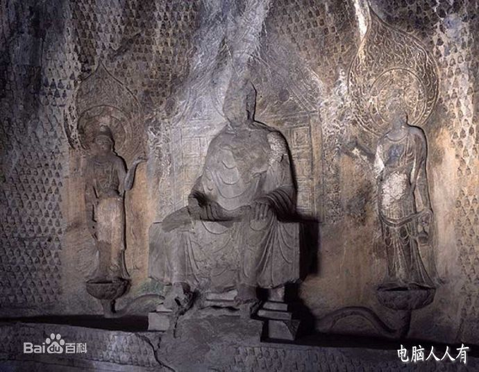 擂鼓台中洞
龙门石窟地图及旅游路线:
参观路线:
总路线:
西山石窟---东山石窟---香山寺---白园西山石窟：北门---禹王池---潜溪寺---宾阳三洞---摩崖三佛龛---万佛洞---莲花洞---奉先寺---古阳洞---药方洞--南门
东山石窟:
南门---擂鼓台三洞---文物廊---千手千眼观音像龛---西方净土变龛---看经寺---二莲花洞---四雁洞---北门
香山寺:
南步游道---莲花池---钟楼、鼓楼---天王殿---罗汉殿---石楼---九老堂---观景台---大雄宝殿---乾隆御碑亭---蒋宋别墅---撞钟（钟、鼓楼观景台留影）---从后门经东山宾馆进入白园
白园:
南大门进---南诗廊---琵琶峰---北诗廊---道诗书屋---乐天堂---青谷---正门
开放时间
旺季：04月01日-10月07日 开放时间： 07:30-22:00
10月08日-10月31日 07:30-18:00
淡季：02月01日-03月31日 开放时间： 08:00-18:00
11月01日-次年01月31日 08:00-17:30
景点交通:
石窟位于洛阳市区南12公里处，可从洛阳火车站乘81路公交车前往，车程约40分钟。还有从市区其他地方坐53路、81路和60路也可以到达。龙门石窟与少林寺之间也有对开的班车。